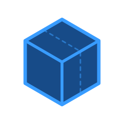

Inspector Source · ··· menu open
Inspector ×
Inspector / Effects / Silk & Curl
Object Surface Pour Ribbons
VFX · additive · running
LIVE
3,186 alive
620 / S94 % POOLLIFE 3.4–5.2 S
Particles start on4 shapes
Object surfaceGround_Mesh_02
Box volume1.65 m

Sphere shellr 1.2 m
Ringr 0.5 m
Surface: Ground_Mesh_02
+120620/sRate
3,400Pool · 94 % used
Patternhow they arrive
Steady streamBursts
Revision 3 · 2 changesRevert
Inspector Look
Inspector ×
Inspector / Effects / Silk & Curl
Object Surface Pour Ribbons
VFX · additive · running
LIVE
3,186 alive
620 / S94 % POOLLIFE 3.4–5.2 S
Bokeh headAll styles
Mixed
Sharp
Creamy
Rim
Colour over life
born4 stops · click to addgone
0.6 – 1.4Size
0.85Opacity
Additive glowOn
Face cameraOff
Revision 3 · 2 changesRevert
Inspector Lifespan · pool full
Inspector ×
Inspector / Effects / Silk & Curl
Object Surface Pour Ribbons
VFX · additive · pool full
FULL
3,400 alive
980 / S100 % POOLLIFE 3.4–5.2 S
1
~180 particles dropped4 s ago
Adding 980 per secondneeds room for about 4,400
Pool holds 3,400full for the last 4 s
RecommendRaise the pool to 4,500
ApplyEach particle lives3.4 – 5.2 s
born3.4 s5.2 salive
+0.20.8sFade out
Floor bounceStays airborne
When the pool is full
Drop newRecycle oldest
Revision 3 · 2 changesRevert
Particle Studio redesign
Built on the Project Zero editor shell (docks, dock tabs, notches, isometric icons, quick tiles) and the General UI references: count chips, status pair, tinted alert with a numbered badge and Recommend, pill nav with one filled item, metric tiles with ↗, dashed target lines, white primary pill, viewport callouts.
Inspector categories
Sourcewhere particles start, rate, pool
Motioncurl, wind, gravity, drag, forces acting
Lookbokeh head, colour over life, size, glow
Lifespanlife, fade, floor, when full
The live preview sits above the categories on every page, so the Overview page is gone. Problems show up as an alert at the top, with a fix.
Layout changes
Outliner filter dropdowncount chips
Visible / Hidden tilesRunning / Needs a look
Pool warningsalert in the list + inspector
Inspector Burstone Burst all pill
Duplicate, Clear, Delete row··· menu
Modules & Record tabRecord in the header
Transport + timelineone bar with particle-count line
Stat chips in viewportmetric tiles + callout